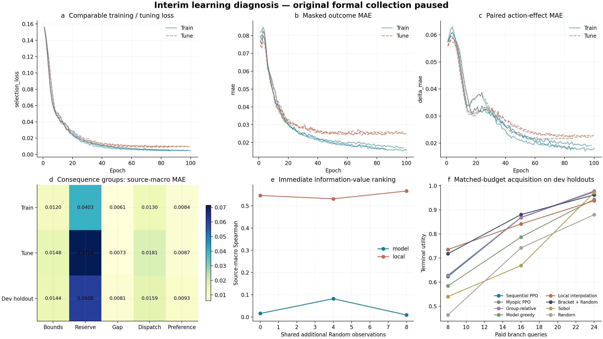
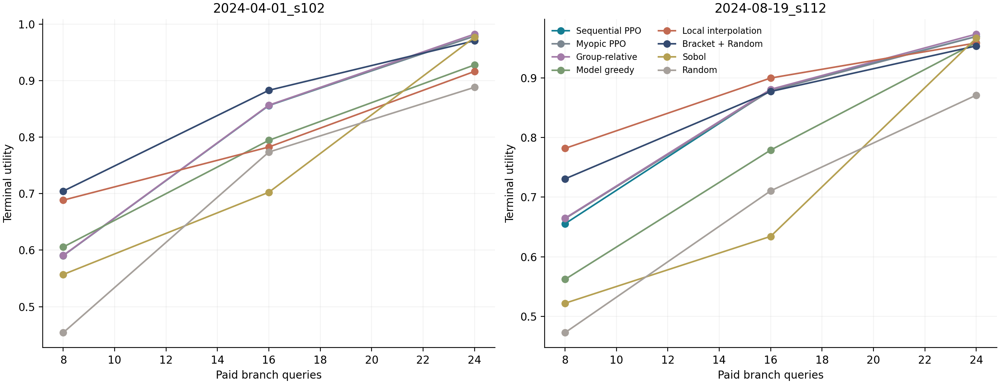

本轮按用户要求暂停原正式采集，7个进程与原有现场均保留；76个完整情境、2432条完整池分支已用于独立的中期开发检查，另34条已封存但池未齐的原confirm分支保留不用。训练10个source、调参4个source，固定从原训练角色中留出s102/s112两个source（8情境、256行动）作开发检查，原正式confirm未参与。
当前结论是：轻量网络已经能学习行动后果，但这种能力尚未充分转化为细粒度信息价值排序。原模型的后果MAE为0.0226，零变化基线为0.0531，降低约57.5%；同状态参考相对的行动增量MAE为0.0198，零增量基线为0.0548，降低约64.0%。对归一化真实增量绝对值大于0.01的单元，方向正确率为89.7%。这些是后果与增量指标，不是复合风险召回率。
训练监测表明问题不宜直接归结为“网络完全学不会”。三个seed的最佳epoch为74、86、94，训练MAE约0.0168，调参MAE约0.0250；验证后期开始平台，训练误差仍继续下降，存在一定泛化差距。后果模型训练每seed约10–13秒，PyTorch跟踪到的峰值显存约27.8 MiB；显卡占用低与当前模型和张量规模相符。
五组后果中，开发留出的支持区间MAE约0.0144，储能相对恢复工作量MAE约0.0608，恢复缺口约0.0081，后续调度约0.0159，偏好变化约0.0093。储能恢复工作量是当前最明显的连续预测误差来源，不能只看总体平均数。
信息价值排序比后果回归更薄弱。相同已查询历史下，模型边际信息价值Spearman为0.0355，局部插值为0.5481。Top1边际遗憾分别为0.0838和0.0957，表明全排序相关性与单次最优选择并不等价；两个口径需要并列。该排序评估针对即时边际收益，多步策略价值另由终局预算实验判断。
从后果读出到画像的转换存在具体失真。三个分别训练模型在开发集共2304个已知恢复单元上共有30个真实恢复失败，原恢复头漏报0、误报4；但相邻恢复边界12组重复评价只匹配8组，另有4组错位边界。转折画像3072个模型—分支—方向标签位中有916个不一致，约29.8%。这些是同一批物理分支经3个模型重复评价的计数，不能当成2304个独立物理实验。此结果提示：回归误差较小仍可能在上下界差分、跨时刻符号阈值与边界位置处被放大；下一轮应检验时空结构是否改善这些决策敏感细节，而不只检验总MAE是否下降。
在每情境16次新增查询时，PPO终局采集效用0.8677，Myopic 0.8673，组相对0.8686，局部插值0.8410，括区＋Random 0.8799，Random 0.7420，Sobol 0.6683。PPO相对Random为+0.1256，相对局部插值为+0.0266，但未超过括区＋Random；相对即时策略只有+0.0004，当前没有显现独立的多步规划增益。该效用由画像覆盖和边界定位组成，不是风险发生概率或报警召回。
收益随预算和情境变化。预算8时局部插值和括区更有效；预算24时PPO为0.9739，组相对为0.9776，超过括区的0.9619和Random的0.8794。预算16且存在恢复边界的情境中，PPO边界定位率1.0、Random为0.5，但归一化画像覆盖改善为0.784和0.840；PPO的优势包含更积极捕获边界的取舍，不能概括成所有后果细节的覆盖都更好。在无恢复边界情境中，PPO覆盖改善0.843，括区/Random均约0.814。两个开发source逐源曲线已给出。
因此下一步容量对照的检验重点应为：储能恢复工作量、支持区间差分、转折画像和边界位置是否更准确，信息价值排序与小预算终局效用是否共同改善，以及gamma1是否能超越gamma0。单独扩大MLP可能改善拟合，也可能只扩大训练—验证差距，必须和具有相近参数量的结构模型分开比较。
原正式实验恢复并完成后，固定同一份完整数据、source划分、scaler、监督目标与随机种子。先比较约0.14M基线与约1M宽MLP，再以相近参数量比较宽MLP和“图结构＋可见预测时序编码＋GRU演化”后果模型。所有模型接收相同可见信息；结构模型优先重排已有823维中的节点、站点、六小时预测和到达先验，而不增加未来真实值。若加入既有两小时历史，必须同时提供给MLP并单列信息增量。
第一阶段只改后果模型，采集策略定义保持不变，检查后果、delta、转折和边际排序；第二阶段把各后果模型冻结后，以相同120×8 episode和预算8/16/24训练同一SetPolicy，检查信息价值能否兑现。相同梯度预算不是相同FLOPs，实际时间、显存和计算量同时记录。当前中期诊断未提前实现或筛选这些新架构。
中期运行：artifacts/sequence_interim/sequence_interim_s42_v1。执行3个新后果模型和9个新采集策略，零新物理仿真，旧RL/专家/预警器训练0。完整Resume已经验证新增拟合0，源文件及各模型seal通过。
查看报告：完整HTML，逐项结果正文。规格与计划位于docs/superpowers/specs/2026-11-03-interim-capacity-diagnostic-design.md和plans/2026-11-03-interim-capacity-diagnostic.md。
Set-Location -LiteralPath 'D:\博士资料包\科研\科研\AAAI_RL\tarp_37_information_acquisition'
# 只查看暂停状态，不恢复。
powershell -ExecutionPolicy Bypass -File .\scripts\control_sequence_pause.ps1 -Action Inspect
# 重读已有中期结果；已有模型全部复用。
powershell -ExecutionPolicy Bypass -File .\scripts\run_sequence_interim.ps1 -RunId sequence_interim_s42_v1 -Device cuda -Resume
# 仅在用户决定继续原采集后执行；不得再启动第二份collector。
powershell -ExecutionPolicy Bypass -File .\scripts\control_sequence_pause.ps1 -Action Resume
恢复助手核对PID、创建时间和命令，并通过排他锁、原子状态记录和native调用前的in-flight标记防止重复恢复。机器若已重启，内存进程不存在，改用原封存分支的冷恢复流程；不得按旧PID操作新进程。App中的原heartbeat目前为PAUSED，恢复监测也应由用户明确要求后启用。
原正式采集已按用户要求暂停，7个进程保留。此次只读76个完整情境、2432条分支；原最终confirm未参与。两个开发留出source为2024-04-01_s102与2024-08-19_s112，来自原训练角色；10个source训练、4个source调参、3个source作cal支持检查。该报告回答现有样本能否学会后果和采集价值，不代替最终正式比较。
| 角色 | source | 情境 | 分支 | 完整后果画像 |
|---|---|---|---|---|
| cal | 3 | 12 | 384 | 384 |
| development_test | 2 | 8 | 256 | 256 |
| meta_train | 5 | 20 | 640 | 640 |
| meta_tune | 2 | 8 | 256 | 256 |
| train | 5 | 20 | 640 | 640 |
| tune | 2 | 8 | 256 | 256 |
未知标签保留mask，只有完整核验画像进入终局效用分母；不完整的原confirm池没有被截成更容易的候选池。
三个seed均使用原136639参数后果模型，监督、学习率、batch和早停保持不变。逐epoch增加无梯度、无随机采样监测；跨训练与调参比较相同无权重口径，原正例加权优化损失单独记录。所有模型仅按原tune/meta_tune角色选择。
| seed | 训练轮数 | best epoch | 训练MAE | 调参MAE | 梯度步数 | 训练秒 | 峰值PyTorch显存MiB |
|---|---|---|---|---|---|---|---|
| 42 | 86 | 74 | 0.0167 | 0.0245 | 860 | 12.6 | 27.8 |
| 43 | 98 | 86 | 0.0177 | 0.0255 | 980 | 11.3 | 27.8 |
| 44 | 100 | 94 | 0.0159 | 0.0250 | 1000 | 9.9 | 27.8 |

| 角色 | 后果MAE | 零变化MAE | 行动增量MAE | 零增量MAE | 显著变化方向正确率 |
|---|---|---|---|---|---|
| cal | 0.0266 | 0.0544 | 0.0252 | 0.0562 | 0.8904 |
| development_test | 0.0226 | 0.0531 | 0.0198 | 0.0548 | 0.8972 |
| meta_train | 0.0157 | 0.0527 | 0.0180 | 0.0544 | 0.8926 |
| meta_tune | 0.0255 | 0.0509 | 0.0239 | 0.0525 | 0.8749 |
| train | 0.0178 | 0.0516 | 0.0189 | 0.0533 | 0.9025 |
| tune | 0.0246 | 0.0500 | 0.0205 | 0.0516 | 0.9013 |
行动增量比较同情境候选与参考，双方标签已知才计入。方向指标只统计归一化真实增量绝对值大于0.01的单元，此阈值用于区分有效变化，不是工程报警标准。图a至c比较训练/调参可学习性；图d检查哪类物理后果主导误差。
各模型使用完全相同的公共初始3条和预定Random增量历史，比较预测即时边际效用与已知真实边际效用。原始真值平坦时不报告虚假的Spearman；该排序评价和多步终局规划分别报告。
| 排序器 | Spearman | 有区分度的排序组 | 排序组总数 | Top1边际遗憾 |
|---|---|---|---|---|
| model | 0.0355 | 72 | 72 | 0.0838 |
| local | 0.5481 | 72 | 72 | 0.0957 |
| 采集方法 | 预算8效用 | 预算16效用 | 预算24效用 | 预算16边界率 | 预算16未知查询 |
|---|---|---|---|---|---|
| Sequential PPO | 0.6230 | 0.8677 | 0.9739 | 1.0000 | 0.0000 |
| Myopic PPO | 0.6271 | 0.8673 | 0.9738 | 1.0000 | 0.0000 |
| Group-relative | 0.6278 | 0.8686 | 0.9776 | 1.0000 | 0.0000 |
| Model greedy | 0.5839 | 0.7866 | 0.9433 | 0.8333 | 0.0000 |
| Local interpolation | 0.7351 | 0.8410 | 0.9372 | 1.0000 | 0.0000 |
| Bracket + Random | 0.7176 | 0.8799 | 0.9619 | 1.0000 | 0.0000 |
| Sobol | 0.5396 | 0.6683 | 0.9713 | 0.1667 | 0.0000 |
| Random | 0.4636 | 0.7420 | 0.8794 | 0.5000 | 0.0000 |
预算16下，序贯PPO相对即时PPO为+0.0004，相对局部插值为+0.0266，相对括区＋Random为-0.0122，相对Random为+0.1256。各seed、两个开发source及四种时间/偏好情境在相同分母上比较；逐源结果如下。

训练和调参均存在较高误差时，优先核查容量、优化和输入表达；训练误差小而留出误差大时，优先核查跨source经验；后果预测可用而边际价值排序差时，核查后果到采集目标的映射；即时排序可用而PPO不胜强简单方法时，再分析多步规划的实际空间。
本轮使用当前轻量架构建立监测基线，不提前更换正式架构。用户恢复并完成当前正式实验后，容量对照固定数据hash、source、输入、监督和查询预算，先比较小/宽MLP，再对参数量接近的宽MLP与空间时序模型进行比较。结构模型若增加已有历史输入，MLP也应获得同样信息，分别识别容量、结构和信息收益。实际梯度步数、训练时间、显存和独立source表现同时记录。
原采集仍暂停。暂停保留内存态；恢复前须核对pause_state.json中的PID与创建时间，不可重复启动或重复恢复。冻结MPC、容量、阈值、旧RL和预警器均未改动。